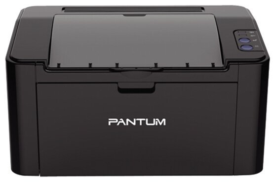

| Фото и имя модели товара |
Тип |
Краткое описание |
Рейтинг |
Цена |
|

Принтер Pantum P2207
|
Принтер |
Pantum P2207 характеризуется компактными размерами и лаконичным дизайном, они оснащены загрузочными лотками на 150 листов, модулями оперативной памяти объемом 64. Крышка принтера, которая в открытом состоянии играет роль выходного лотка, защищает его от пыли. Способность автоматически переходить в спящий режим после нескольких минут простоя позволяет существенно экономить электроэнергию. На носителях формата А4 модель обеспечивает скорость печати до 22 страниц формата А4 в минуту, а на носителях североамериканского формата Letter – до 23 страниц в минуту. Принтеры Pantum используют для работы заправляемые тонер-картриджи P-210E с ресурсом 700 страниц и P-210 с ресурсом 1600 страниц, для которых подходит тонер марки PC-230B. |
**** |
165 руб. |
|
Принтер Samsung SL-M2020 A4
|
Принтер |
Цвета, использованные в оформлении: Черный, белый
Процессор: 400 МГц
Память: 8 Мб
Интерфейс: USB 2.0
Порты: USB 2.0 Type B
Емкость податчика бумаги: 150 листов
Емкость выходного лотка: 100 листов лицевой стороной вниз
Плотность бумаги: 60 - 163 г/м2
Потребление энергии: 310 Вт при печати; 30 Вт в режиме ожидания; 1.1 Вт в режиме энергосбережения |
**** |
150 руб. |
 Принтер Epson L120 Принтер Epson L120
|
Принтер |
Технология печати: Струйная
Количество цветов: 4
Формат: A4
Цвет: Черный
Разрешение ч/б печати: 720 х 720 dpi
Максимальная скорость монохромной печати: 8,5 стр./мин.
Максимальная скорость цветной печати: 4,5 стр./мин.
Двусторонняя печать: Нет
Интерфейс: USB 2.0 |
***** |
280 руб. |
|
Принтер Ricoh SP 400DN
|
Принтер |
Привлекательная цена, хорошая производительность делают принтер Ricoh SP 400DN отличным решением для небольших офисов. Оптимальное устройство для быстрой печати маленьких тиражей |
***** |
250 руб. |
|
Шредер Fellowes AutoMax 130C fs-46801
|
Шредер |
Привлекательная цена, хорошая производительность делают принтер Ricoh SP 400DN отличным решением для небольших офисов. Оптимальное устройство для быстрой печати маленьких тиражей |
***** |
450 руб. |
|
Сканер DocuMate 3125
|
Сканер |
Тип сканера : протяжной. Скорость сканирования моно, при разрешении 200dpi : 25 стр./мин / 44 изобр./мин. Скорость сканирования цвет, при разрешении 150dpi : 25 стр./мин / 44 изобр./мин. Однопроходное двустороннее сканирование : Да |
*** |
120 руб. |
 Сканер DocuMate 3920
Сканер DocuMate 3920
|
Сканер |
Тип сканера : планшетный с автоподатчиком, первый сетевой сканер в линейке Xerox. Скорость сканирования моно, при разрешении 200dpi : автоподатчик: 19 стр./мин. в одностороннем режиме; автоподатчик: 14 изобр./мин. в двустороннем режиме.Однопроходное двустороннее сканирование : Да. Максимальная нагрузка, страниц в день : 1000 |
*** |
200 руб. |
 Ламинатор Wallner А4 OL290
Ламинатор Wallner А4 OL290
|
Ламинатор |
Тип пакетный
Формат A4
Нагревательный элемент валы
Время нагрева 5 мин
Скорость ламинирования 23 см/мин
Холодное ламинирование есть
Диапазон толщины пленки от 80 до 125 мкм
|
**** |
100 руб. |
 Ламинатор РеалИст LM-235
Ламинатор РеалИст LM-235
|
Ламинатор |
|
*** |
80 руб. |
|
МФУ Xerox WorkCentre 3025BI
|
Ксерокс |
МФУ Xerox WorkCentre 3025BI
МФУ, лазерный, черно-белый, формат A4 (210x297 мм), скорость ч/б печати 20 стр/мин, разрешение 600 dpi, Wi-Fi |
**** |
350 руб. |